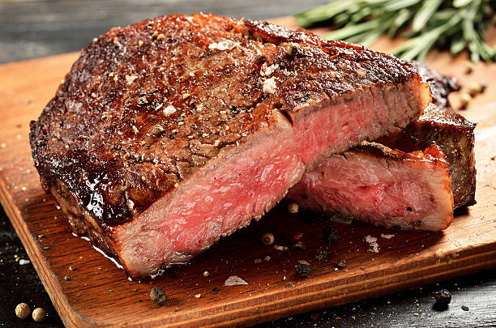

This pan-seared steak is a simple, restaurant-quality dinner you can make at home in under 30 minutes. A hot cast-iron skillet gives the steak a deep, golden-brown crust, while butter, garlic, and fresh thyme are spooned over the top in the final minutes to add rich, savory flavor.
The key is letting the steak come to room temperature before cooking, seasoning it generously with salt and pepper, and giving it time to rest after it comes off the heat. Serve it with roasted potatoes, a green salad, or grilled vegetables for a complete meal.